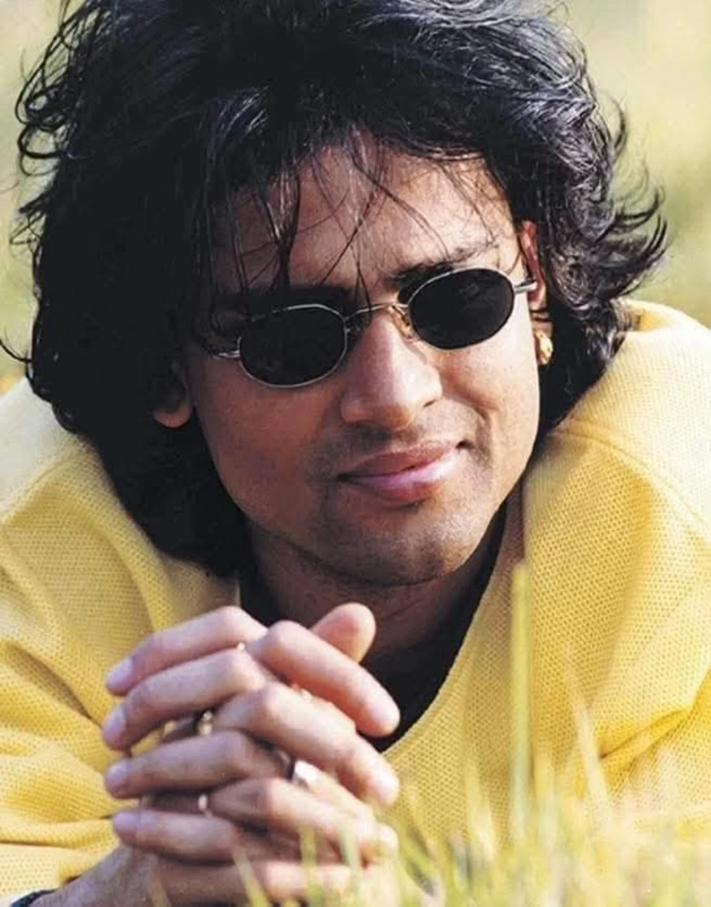

Singer • Composer • Lyricist • Filmmaker • Cultural Icon of the Northeast
Scroll
About
Songs recorded across a career spanning four decades
Languages he sang in, including Assamese, Hindi & Bengali
Year of his debut album, "Anamika"
Musical instruments he could play, from guitar to tabla
Jibon Borthakur born on 18 November 1972, Zubeen Garg rose from Assam's music scene to become one of India's most versatile artists — a singer, composer, lyricist, actor, and filmmaker whose voice carried the soul of the Northeast to audiences across the country. He found nationwide fame with "Ya Ali" from the 2006 film Gangster, but it was his Assamese work — from folk-rooted melodies to soulful ballads — that made him a cultural institution.
Zubeen Daa passed away on 19 September 2025. This page is a small tribute to his music and the joy it continues to bring to millions.
Discography
Tap play to search and listen on YouTube